L'étrange Noël au pays du dieu Chac
Mais si Chac, on vous en a déjà parlé, souvenez-vous! C'est le dieu de la pluie pour les mayas. Avec sa hache de foudre, il frappe les nuages et déclenche le tonnerre et la pluie. C'est un dieu central de la mythologie maya et il est particulièrement reconnaissable grâce à sa trompe. Bref depuis notre dernier article et notre retour à Mexico au début du mois Chac résume bien notre vie mexicaine : la découverte de la culture maya et la poursuite de notre étude sur l'eau douce dans la région. On ne vous cache pas que c'est un peu notre dieu chouchou. Mais ne vous inquiétez pas, durant notre aventure nous n'avons procédé à aucun sacrifice par noyade en son honneur comme il en était coutume chez les mayas pour faire venir la pluie ;-)
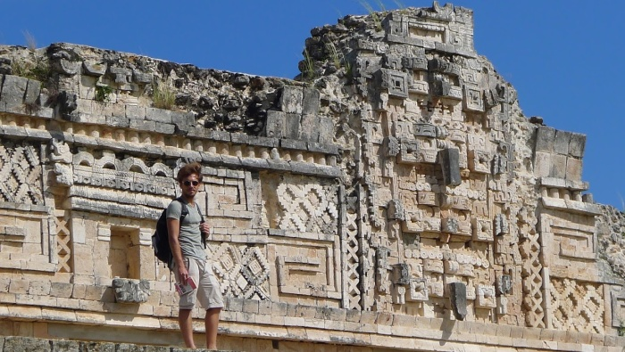
Antoine pose devant des effigies du dieu Chac sur le site maya d'Uxmal
Entrepreneurs sociaux à Mexico
De retour à Mexico, nous reprenons contact avec MakeSense pour les aider dans leurs projets sur place. MakeSense est une communauté de personnes intéressées par l'entrepreneuriat social qui rassemble près de 30,000 personnes à travers le monde! Initialement lancée à Paris, MakeSense dispose aujourd'hui d'une antenne à Mexico pour aider justement les entrepreneurs qui travaillent sur la thématique de l'eau douce dans la capitale. Chaque année MakeSense Mexico choisit 6 projets répondant à une problématique précise de l'eau douce dans la ville (accès à l'eau, inondation, qualité de l'eau, fuites, etc). A la manière d'un incubateur, MakeSense accompagne ensuite chaque projet et les aide à se développer.
Notre première action pour MakeSense a été d'aider à l'organisation du SenseCamp les 4-5-6 décembre dernier. Un SenseCamp c'est une sorte de forum dédié à l'entrepreneuriat social pour mettre en relation toutes les personnes intéressées par le milieu. Par exemple on a croisé au cours du forum des entrepreneurs sociaux bien sûr, mais aussi des journalistes, des investisseurs, des conseillers mais aussi tout simplement des curieux qui voulaient en savoir plus. Le mélange de toutes ces personnes, principalement des jeunes de 20 à 30 ans, donne un cocktail assez génial, plein d'idéaux pour changer le monde mais également emprunt de la réalité business. C'était vraiment incroyable de croiser autant de monde déterminé à agir pour créer un monde meilleur, plus juste et plus respectueux de la planète, avec en plus des projets et des actions concrètes.
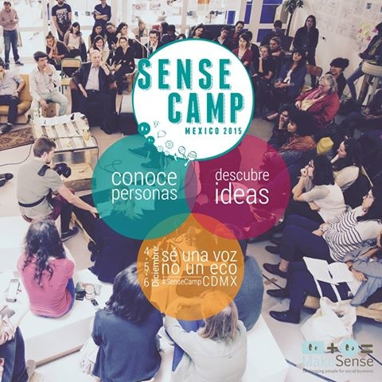
Le Sense Camp, un forum dédié à l'entrepreneuriat social organisé par MakeSense
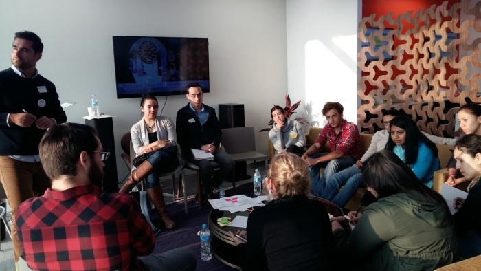
Des ateliers sont organisés tout au long du week end pour en savoir plus sur l'entrepreneuriat social
On a continué notre travail avec MakeSense en participant au Demo Day le 9 décembre dernier. Comme je vous l'expliquais plus haut, MakeSense Mexico choisit chaque année dans le cadre de son programme Agua Urbana, six projets à accompagner pendant un an, de janvier à décembre. Lors du Demo Day chacun vient présenter l'état d'avancement du projet après un an d'incubation. On a ainsi eu l'occasion d'échanger avec les équipes des différents projets :
-
Conciencia Hídrica : évaluer la consommation en eau d'un bâtiment et repérer les endroits où des économies pourraient être faites
-
Gotas de Esperanza : créer de l'eau à partir simplement de l'air ambiant grâce à l'humidité naturelle qui y est présente
-
Recarga de Acuíferos : installer des dispositifs dans la ville de Mexico pour récupérer l'eau de pluie et recharger les aquifères souterrains qui s'épuisent
-
ResilienteMx une plateforme d'analyse des données historiques, géologiques et météorologiques pour analyser et prévoir les risques d'inondations, très forts dans la région
-
Tubepol : une technologie pour réparer à bas coût les problèmes de fuite dans les canalisations de la ville. Aujourd'hui près de 40% de l'eau de la ville de Mexico se perd dans les fuites
On aura l'occasion de vous parler plus longuement de tout ça dans notre article d'étude à paraître prochainement !
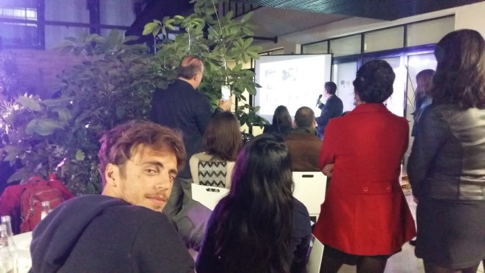
Chaque projet présente son bilan de l'année d'incubation
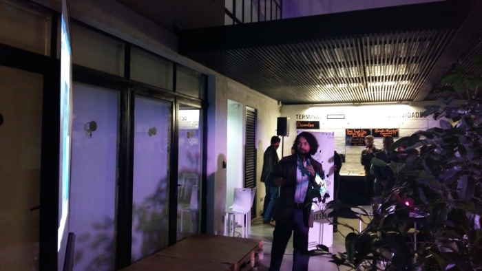
Rencontre avec les entrepreneurs des différents projets
Découverte de Mexico
Pour notre projet nous sommes donc restés près de 3 semaines à Mexico et nous avons eu l'occasion de bien découvrir la ville. Loin des clichés, nous n'avons pas du tout ressenti le sentiment d'insécurité d'une ville dominée par les narcotrafiquants. Au contraire la ville est super sympa, très vivante surtout! Il y a toujours de l'animation dans les rues avec des petits vendeurs de tacos qui font le bonheur des mexicains à tous les coins de rue. Les mexicains sont très accueillants et proposent assez naturellement de vous aider, de vous faire découvrir leur pays. Ils aiment s'amuser et faire la fête à grands coup de mezcal (l'alcool local, bien plus populaire que la tequila). Ils n'essayent pas de vous arnaquer juste parce que vous êtes un touriste comme c'est parfois le cas dans d'autres pays.
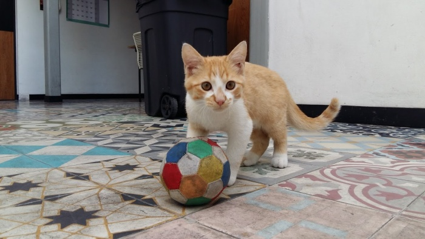
Spinoza adore Mexico. Il découvre le foot, le vrai.
Quelques bémols tout de même, la ville est assez polluée et il y a comme un léger nuage permanent qui recouvre la ville (à un degré bien moindre que certaines villes asiatiques tout de même). Ensuite la ville est immense, avec ses 21 millions d'habitants Mexico est la 4e agglomération la plus peuplée au monde après Tokyo, Delhi et Shanghaï. La ville est donc traversée par de grandes autoroutes et en heure de pointe pour se rendre d'un quartier à l'autre vous pouvez mettre plusieurs heures. Enfin le dernier bémol que je mettrais c'est l'eau. L'eau du robinet n'est pas potable et on est obligé d'aller acheter ses propres bouteilles si l'on veut boire de l'eau.
Hébergés dans le quartier San Miguel de Chapultepec par un ami d'Hec, Guilhem, en stage à Mexico, nous profitons donc de la ville et de ses environs. Nous rencontrons d'autres étudiants français en échange ou en stage dans sa coloc la Casa Conexión. On reçoit la visite de Béatrice, une autre amie d'Hec qui étudie en ce moment à Washington. On en profite pour partir un week end en excursion dans la très jolie ville coloniale de Guanajuato. On va aussi visiter le célèbre site de Teotihuacan, à une heure de bus seulement de Mexico.
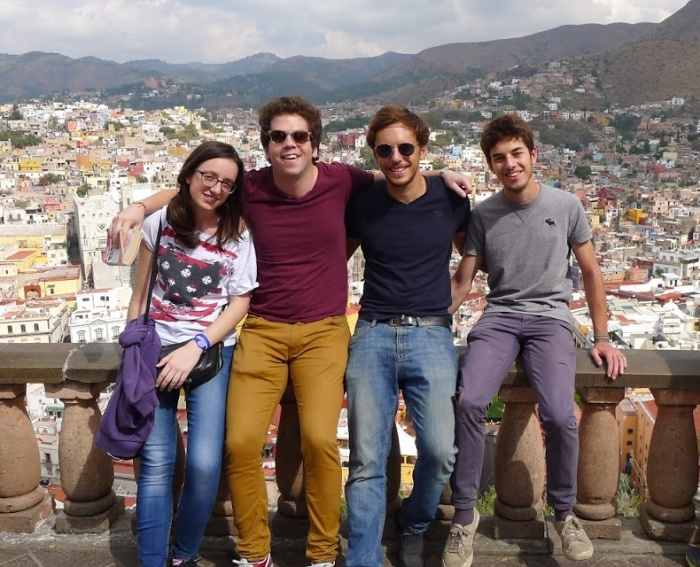
Excursion à Guanajuato avec Guilhem et Béatrice
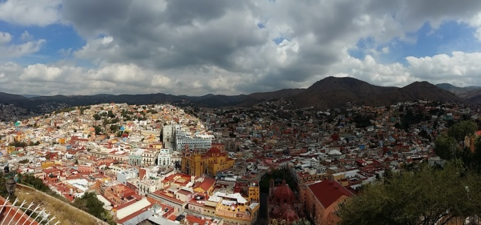
Vue panoramique sur la ville coloniale de Guanajuato, au Nord de Mexico
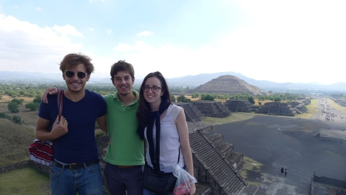
Passage par Teotihuacan et vue sur la grande pyramide du soleil
Yes you c(at)an
Pour parachever notre exploration du Mexique on décide de partir quelques jour dans la péninsule du Yucatán, la région la plus touristique du Mexique. Et pour cause elle recèle les plus beaux sites mayas du monde. Le site de Chichen Itza d'abord, avec sa grande pyramide emblématique et son terrain de "Juego de Pelota" parfaitement conservé. On visite aussi Tulum, un site qui a la particularité de surplomber la mer des Caraïbes ce qui donne une atmosphère vraiment particulière. Enfin notre préféré le site d'Uxmal, plus tranquille, mais avec une pyramide en parfait état qui s'élève au beau milieu de la jungle. On évite Cancun et on transite par la jolie ville de Mérida, autour de laquelle on trouve de nombreux cenotes, des grottes souterraines où l'on peut se baigner.
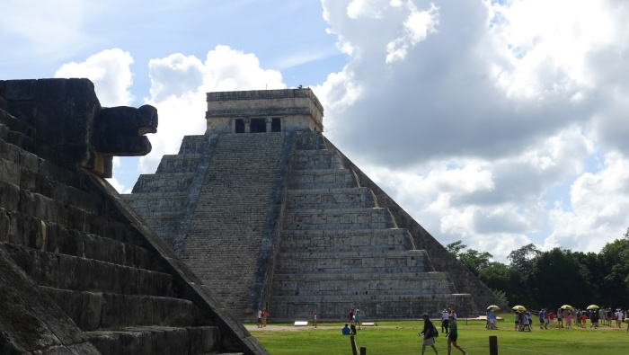
La grande pyramide de Chichen Itza avec au premier plan une statue du dieu serpent Quetzalcoatl
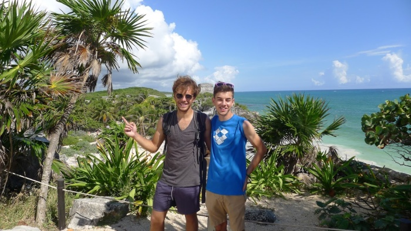
Le site ensoleillé de Tulum, au bord des Caraïbes
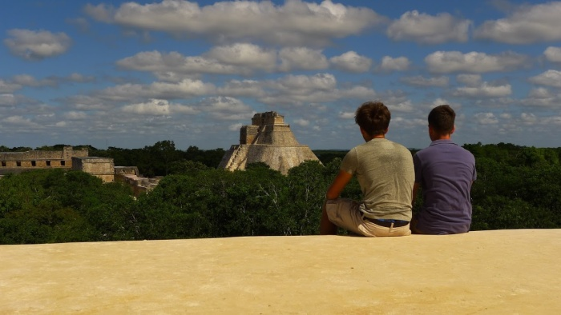
Contemplatifs devant la grande pyramide tranquille d'Uxmal
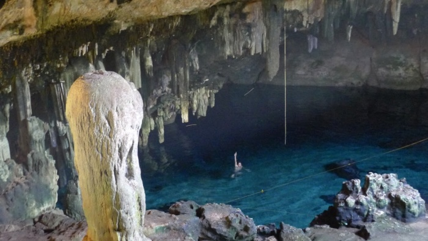
Antoine profite du cenote d'Hotum pour lui tout seul
Comme d'habitude on conclut notre article avec un jeu concours. Saurez-vous retrouver les deux iguanes cachés sur cette photo (Antoine ne compte pas) ? Envoyez vos réponses à contact@aquamerica.fr et le gagnant aura droit à une dédicace sur notre page Facebook.
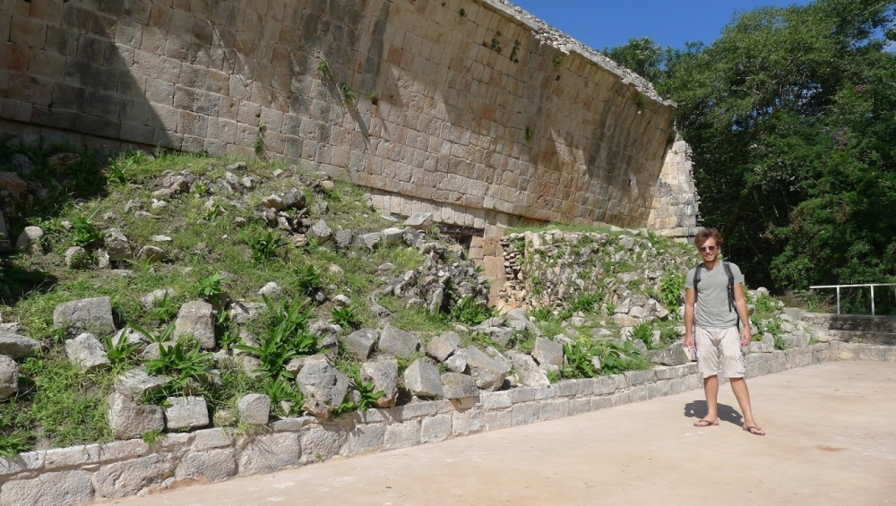
Où sont les deux iguanes sur cette photo??
On vous retrouve très vite pour de nouvelles aventures !
Prochaine étape pour nous la Colombie !!
A très vite,
Grégoire